Fiba Labs · AI Mentoring
Understanding AI, and how to work with it
Plan→Design→Connect→Collect→Interpret→Execute→Display
01
File Formats
Every file is the same three steps.
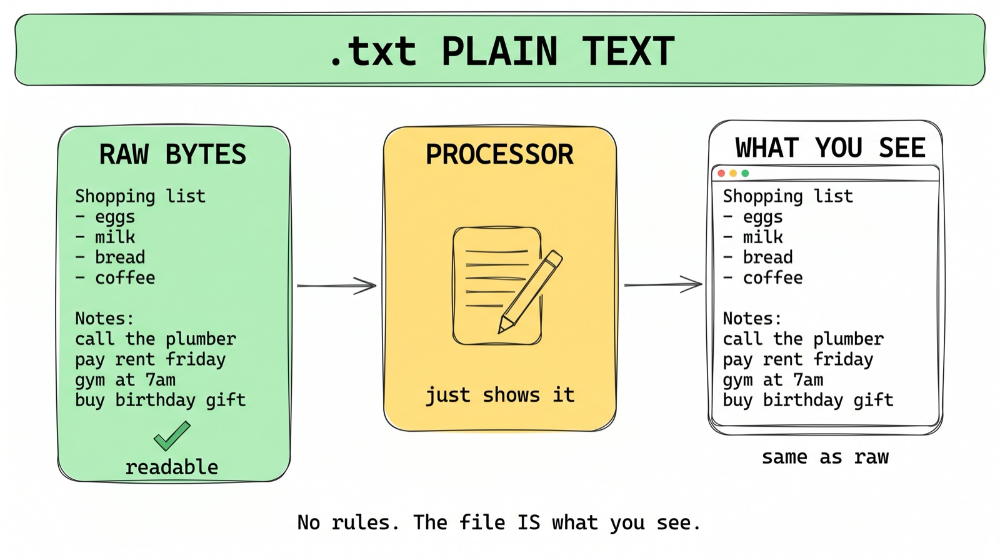
Every file is the same 3 steps: raw bytes, a processor, then what you see
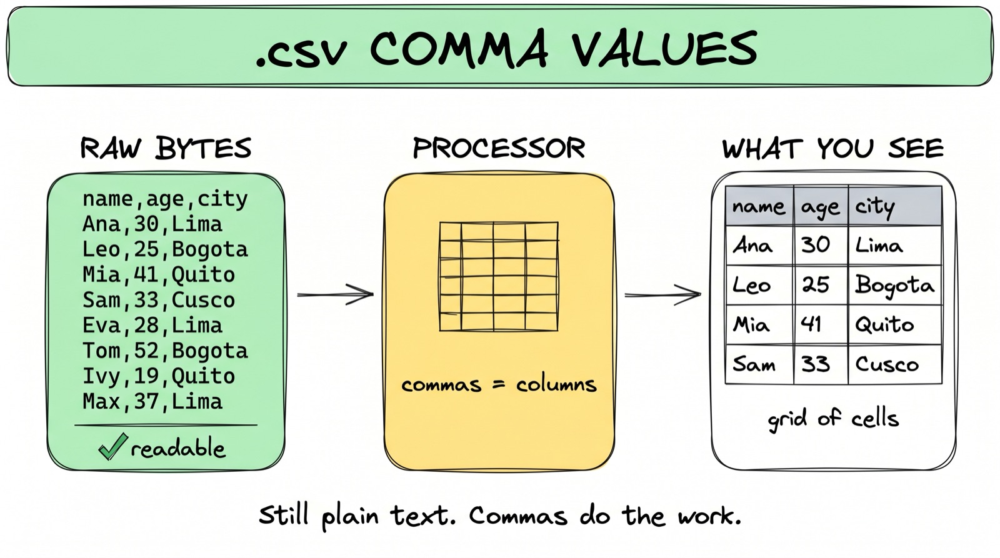
.csv: a table as plain text, one row per line

.docx: a zipped bundle of files in disguise
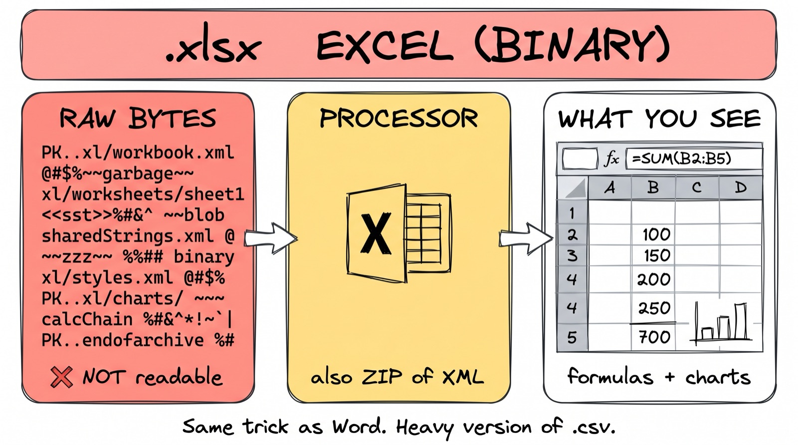
.xlsx: same trick as docx, but for spreadsheets
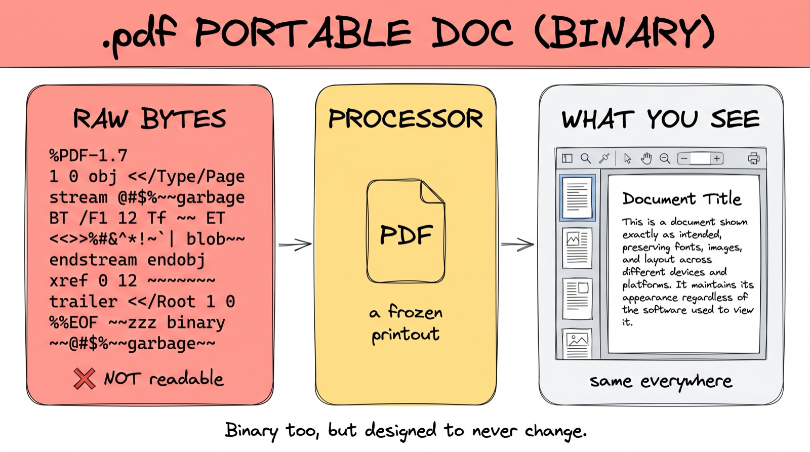
.pdf: a snapshot for printing, hard for software to read back

.html: a page your browser renders
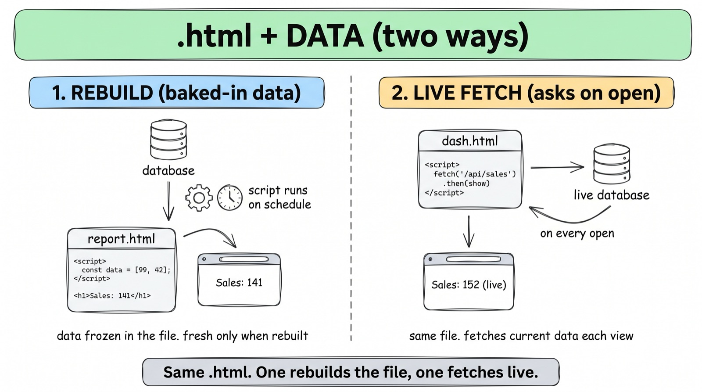
Two ways an HTML file gets its numbers: baked-in (rebuilt on a schedule) vs live fetch
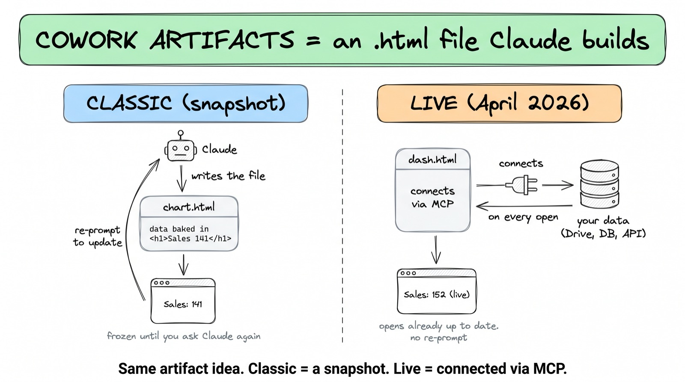
A Cowork Artifact is just an .html file Claude builds for you, and lives in Claude Cowork where it's always updated
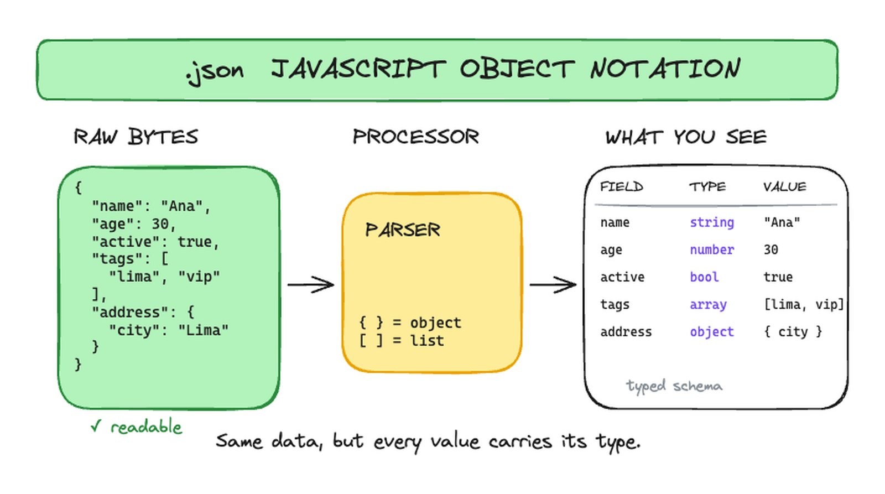
.json: data with every value carrying its type (the format machines read)
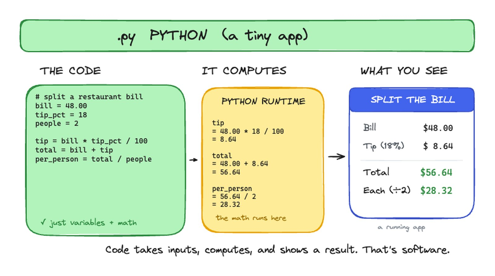
.py: plain text that runs. Code takes inputs, computes, and shows a result
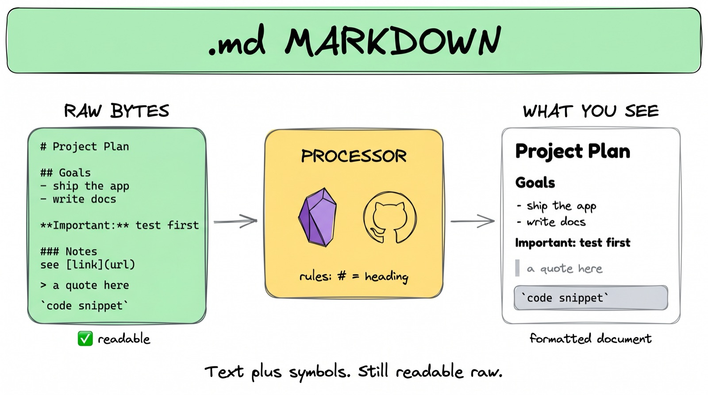
.md: plain text with light formatting. The language Claude prefers

One format, many jobs: instructions, memory, rules, skills

README.md: the front door of any project, the short intro

CLAUDE.md: the standing instructions for a project

AGENTS.md: same file, tool-agnostic name
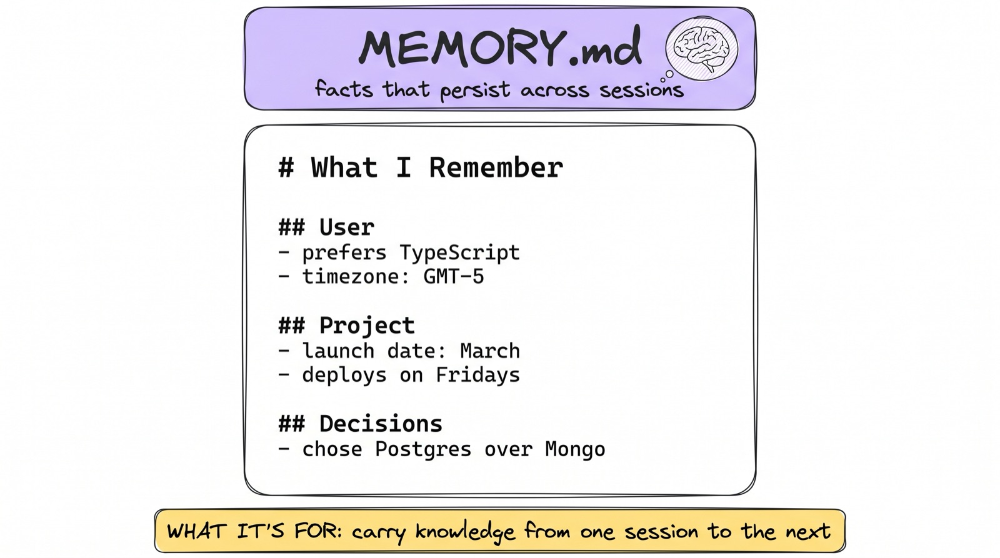
MEMORY.md: what the agent remembers across sessions

rules.md: the hard constraints
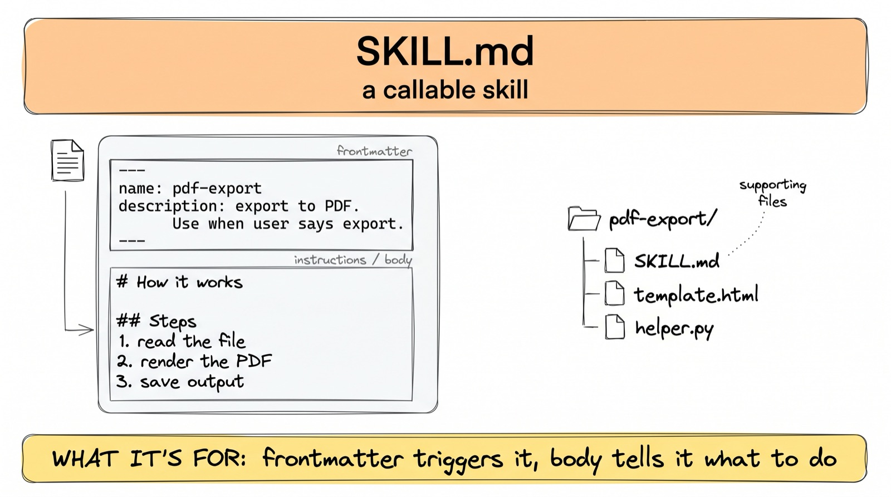
A skill is just a markdown file with instructions

...plus the folder around it
02
Prompting
Stop memorizing frameworks. Ask AI to write the prompt.
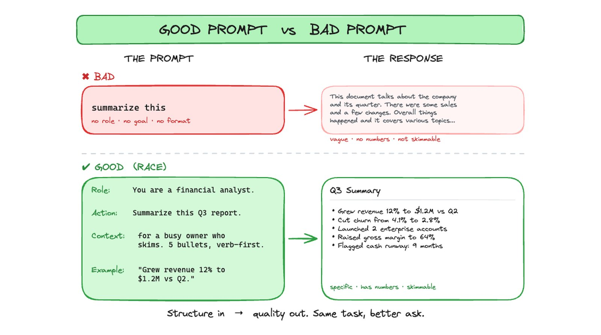
Same task, better ask: an unstructured prompt gives a vague answer; a structured one (role, goal, example) gives a complete one
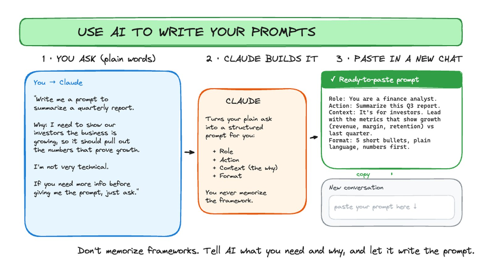
Don't memorize frameworks: tell AI what you need and why, and it writes the prompt you paste into a new chat
03
Authentication
How software proves who it is.
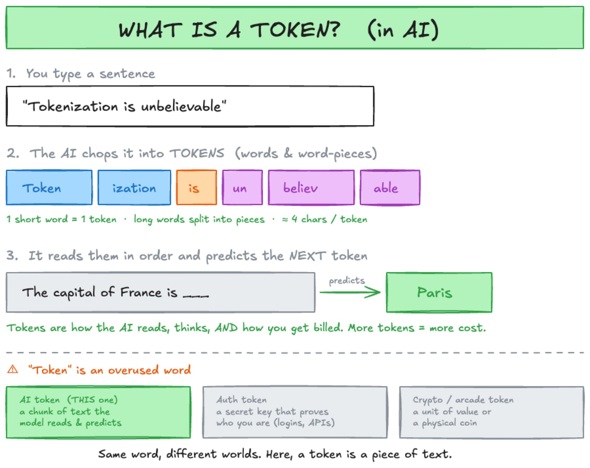
"Token" is an overused word: an AI token is a chunk of text the model reads; an auth token is a secret key that proves who you are

API keys vs tokens vs OAuth: what each actually does

When to use which, and why OAuth is the safe default
04
APIs & MCPs
One standard box solves the tangle.
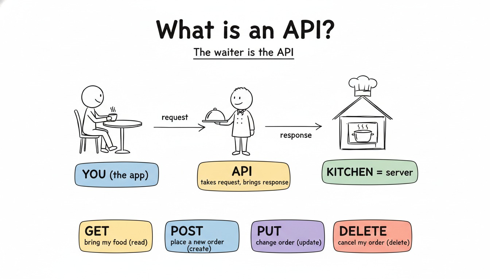
An API is the waiter: you order from a menu, the kitchen stays hidden

Every app speaks its own API, a different waiter per restaurant

N tools by M assistants = a tangle of custom connections

MCP is the standard box for AI: one protocol, plug any tool into any assistant

Why it works, before shipping containers: every cargo loaded by hand, every port different

The container standardized the box: any crane, any ship, any port. MCP did that for tools